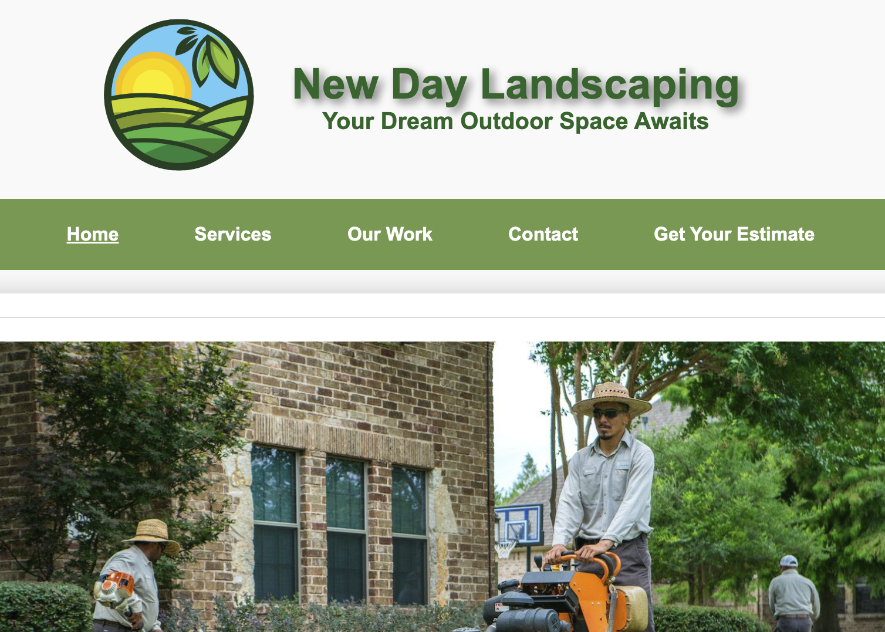
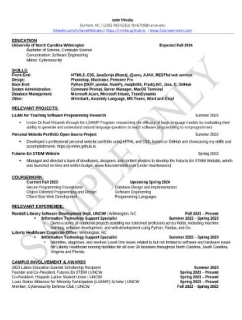

My Projects
Click on the project to learn more!

New Day Landscaping
Click to view.
Research: Investigation Of Large Language Models For Teaching Software Programming To Non-Programmers
More details here.
Futuros En STEM
www.futurosenstem.com
